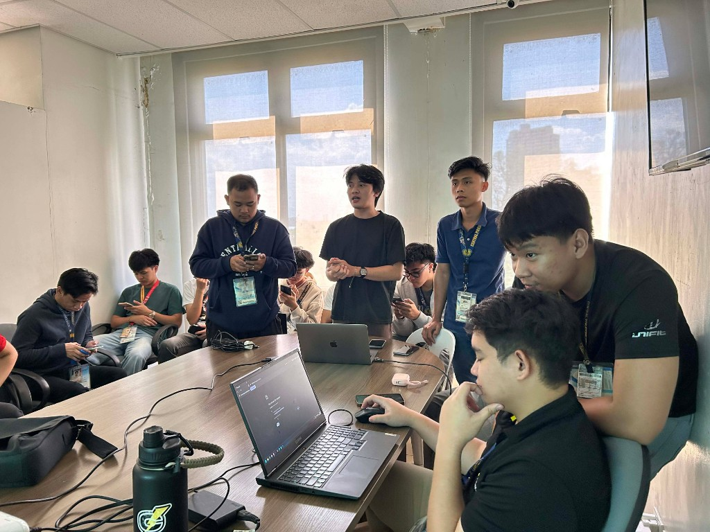

Chapter 01
More Than a Software Project
TSSRS began as more than just a software development project assigned by the office to work on. It is a start of curating my own thinking process in creating worlflows. An office where some processes and its workflow relies heavily on manual tracking, communication, and paperwork.
While the workflow itself was functional, monitoring requests, assigning responsibilities, and generating reports required significant effort and coordination.

Understanding the process first